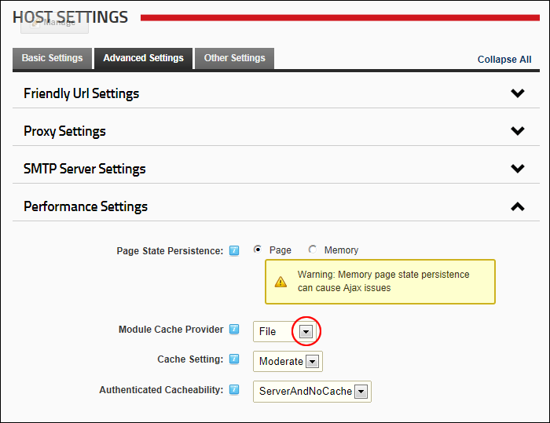

Setting the Module Caching Provider
How to select the default module caching provider. When a module has its caching turned on by setting a value over zero in the Module Settings page DNN has to store that information until the module is called again. By default, DNN will store the rendered HTML on the server as a file under the ../../../../../Resources/OnlineHelp/Cache folder. This is the default setting and keeps the amount of server memory required low.
Note: This setting can be overridden for each individual module.
- Navigate to Host >
 Host Settings.
Host Settings.
- Select the Advanced Settings tab.
- Expand the Performance Settings section.
- At Module Caching Provider , select from these options:
- File: Select to store the rendered content on the server as a file under the ../../../../../Resources/OnlineHelp/Cache folder. This is the default setting and keeps the amount of server memory required low.
- Memory: Using the Memory setting stores the cached HTML in the server's memory. This setting makes retrieving the content from the cache faster but fills up available memory and can cause the memory to recycle more often than needed thus reducing its effectiveness.

-
Click the Update button.